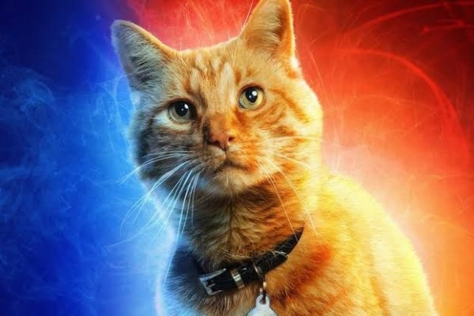

Kucing adalah salah satu hewan peliharaan terpopuler di dunia. Jumlah kucing ras hanyalah 1% dari seluruh kucing di dunia, sisanya adalah kucing dengan keturunan campuran. Kucing telah berbaur dengan kehidupan manusia paling tidak sejak 6.000 tahun SM, dari kerangka kucing di Pulau Siprus.
 gambar 1
gambar 1 gambar 2
gambar 2